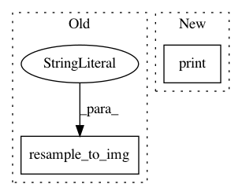

521c40dbcbcb9f7b7868175b1710760dd8b5d1fd,pynets/registration/reg_utils.py,,atlas2t1w2dwi_align,#Any#Any#Any#Any#Any#Any#Any#Any#Any#Any#Any#Any#Any#Any#Any#Any#Any#Any#,100
Before Change
nib.load(uatlas_parcels), template_img, interpolation="nearest"
)
else:
uatlas_res_template = resample_to_img(
nib.load(uatlas), template_img, interpolation="nearest"
)
uatlas_res_template_data = np.asarray(uatlas_res_template.dataobj)
uatlas_res_template_data[
uatlas_res_template_data != uatlas_res_template_data.astype(int)
] = 0
After Change
old_count = len(np.unique(uatlas_res_template_data))
new_count = len(unique_a)
diff = np.abs(np.int(float(new_count) - float(old_count)))
print(f"Previous label count: {old_count}")
print(f"New label count: {new_count}")
print(f"Labels dropped: {diff}")
atlas_img.uncache()
In pattern: SUPERPATTERN
Frequency: 3
Non-data size: 2
Instances
Project Name: dPys/PyNets
Commit Name: 521c40dbcbcb9f7b7868175b1710760dd8b5d1fd
Time: 2020-07-06
Author: dpisner@utexas.edu
File Name: pynets/registration/reg_utils.py
Class Name:
Method Name: atlas2t1w2dwi_align
Project Name: dPys/PyNets
Commit Name: 521c40dbcbcb9f7b7868175b1710760dd8b5d1fd
Time: 2020-07-06
Author: dpisner@utexas.edu
File Name: pynets/registration/reg_utils.py
Class Name:
Method Name: atlas2t1w_align
Project Name: dPys/PyNets
Commit Name: b049d72f6a5f71855c762112959642ac402693a9
Time: 2019-10-03
Author: dpisner@utexas.edu
File Name: pynets/registration/register.py
Class Name: FmriReg
Method Name: atlas2t1wmni_align